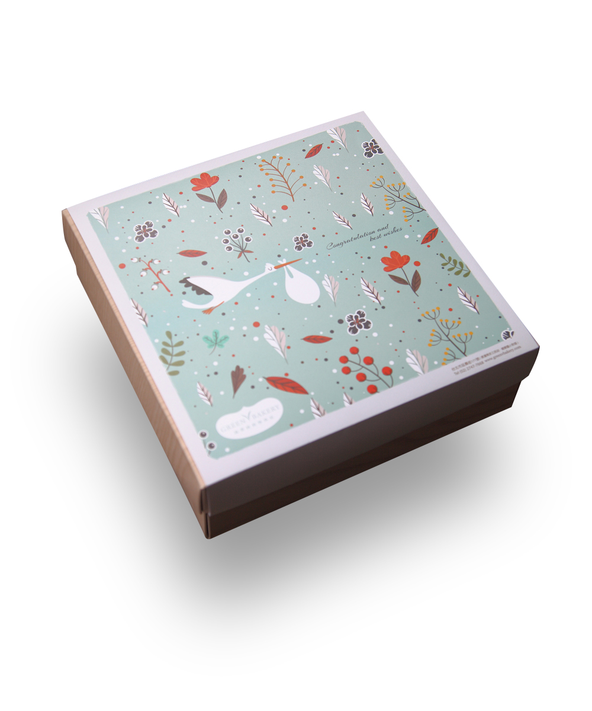
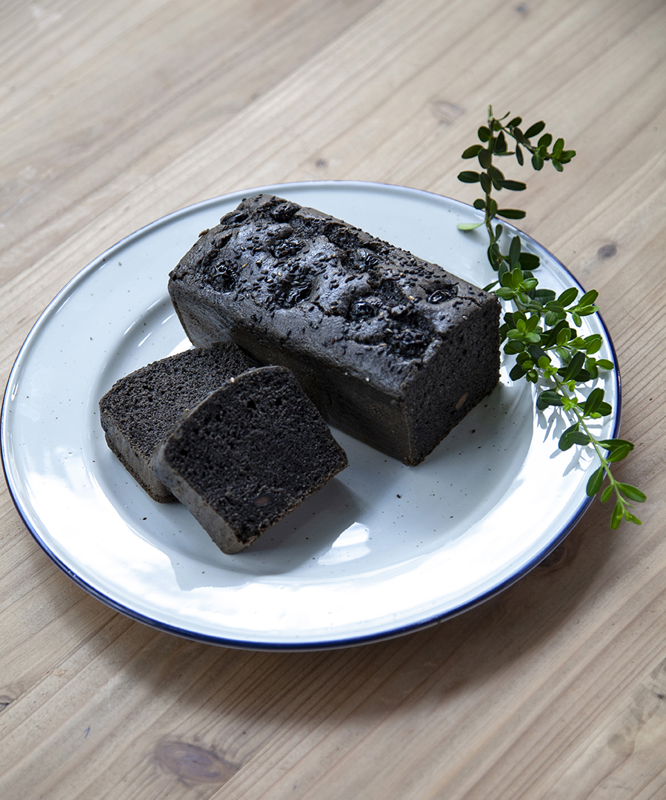
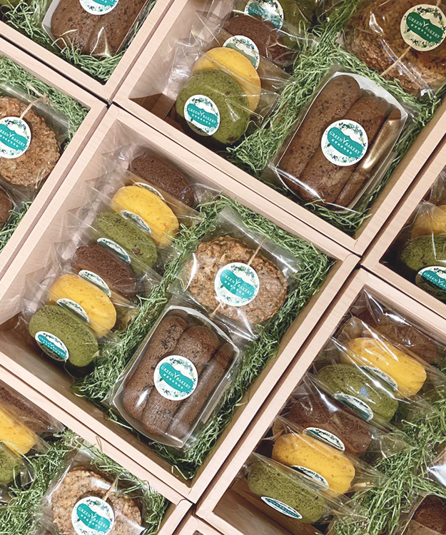

市面上的喜餅禮盒往往在包裝上極盡奢華，
但是最重要給親友品嘗的內容反而不夠用心，
我們認為美滿婚姻就像是我們的喜餅，
不須譁眾取寵，而是有個人的想法，
用心經營的內涵，才是讓婚姻長長久久的道理。
但是最重要給親友品嘗的內容反而不夠用心，
我們認為美滿婚姻就像是我們的喜餅，
不須譁眾取寵，而是有個人的想法，
用心經營的內涵，才是讓婚姻長長久久的道理。
您可以在綠帶純植物烘焙，
透過自組的方式搭配出個人化的喜餅禮盒，
挑選外盒與緞帶，呈現專屬於您的風格，
最重要的是，每位收到喜餅的至親好友，
都會感受到您充滿愛的純植物選擇。
透過自組的方式搭配出個人化的喜餅禮盒，
挑選外盒與緞帶，呈現專屬於您的風格，
最重要的是，每位收到喜餅的至親好友，
都會感受到您充滿愛的純植物選擇。
挑選外盒
在發展禮盒之初，我們告訴設計團隊，希望能夠更環保，不要太多印刷上的浪費，特別設計出可雙面使用的印刷方式。您只要透過木紋與沈穩的深褐色，調整上蓋與底盒，便能靈活搭配出您喜歡的配色！
- 深褐蓋/深褐底
- 木紋蓋/木紋底

- 深褐蓋/木紋底

- 木紋蓋/深褐底

挑選緞帶
您可以在禮盒上的緞帶上，創造亮點與個人風格，我們提供不同色彩的各式緞帶供您挑選。精美的心意需要細細包裝，親手綁上緞帶與蝴蝶結，讓祝福滿溢。


提走的是您的心意，帶不走的是對您滿滿的祝福。
挑選提袋
我們以環保概念設計提袋，使用易分解的紙張與印刷方式。若您需要更加華麗的提袋，我們也能提供您接單後訂製的華麗版提袋。

分享純植物喜悅
常有媽媽來問彌月禮盒，在過程中發現最在意的是孩子吃進去的是否能讓他們安心。
所以我們選用大量的有機食材、植物性油，沒有讓孩子容易過敏的雞蛋、牛奶。
純植物烘焙就像父母親關愛子女一般，雖然您的Baby還小無法品嚐我們的旦糕，
但是希望您朋友的孩子或您的Baby長大也能吃的安心、健康。
所以我們選用大量的有機食材、植物性油，沒有讓孩子容易過敏的雞蛋、牛奶。
純植物烘焙就像父母親關愛子女一般，雖然您的Baby還小無法品嚐我們的旦糕，
但是希望您朋友的孩子或您的Baby長大也能吃的安心、健康。
禮盒介紹
彌月禮盒的設計，是透過送子鳥穿越大自然帶來生命的構想。感謝上天把最珍貴的寶貝送到我們身邊，並將美好的喜悅分享出去。

- 
圓圓圈
柔軟綿密的旦糕甜甜圈，以台灣在地食材作為口味發想。使用天然食材的色彩，不使用色素，圓圓小巧，方便您輕鬆享用，非常討喜！＊特殊訂單商品，單一口味最低訂購量30入。
- 抹茶紅豆
- 紅麴蔓越莓
- 葡萄巧克力
- 咖啡核桃
- 香橙
棒但糕
最基本的旦糕往往才能看出師傅的功力，每一款都是多種精選食材在其中混和交疊出豐富的層次，外觀最樸實，口感卻是最驚豔，您一定可以在其中找到您的最愛。
- 巧克力香蕉核桃
- 南瓜栗子伯爵
- 芝麻黑豆
- 肉桂蘋果
客製分享
客戶訂製的彌月禮盒，有可愛小巧的圓圓圈、樸實美味的棒旦糕，當然也可以選擇旦糕加上餅乾的豐富組合。
- 